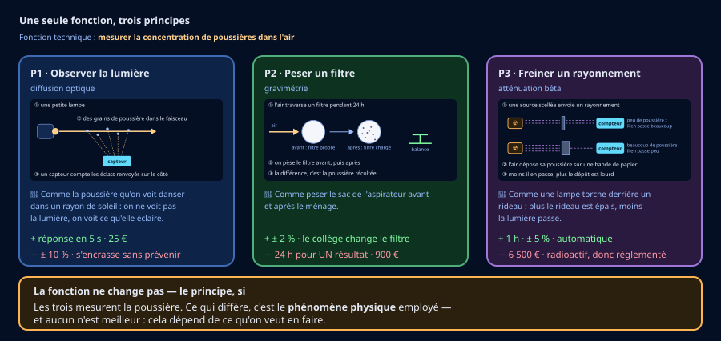
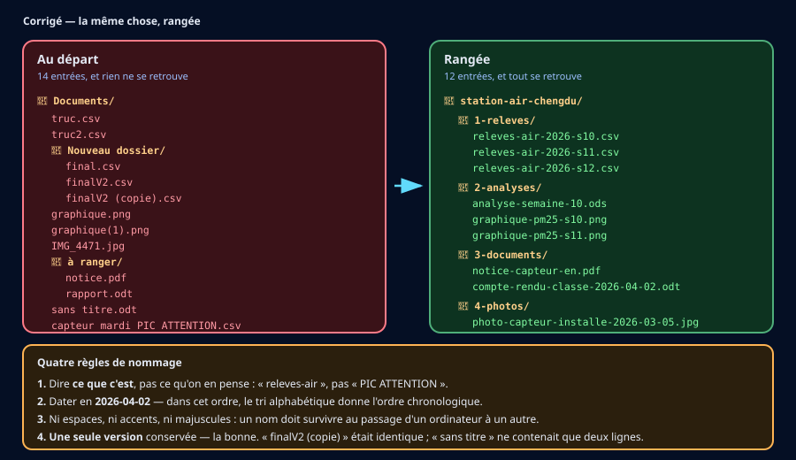
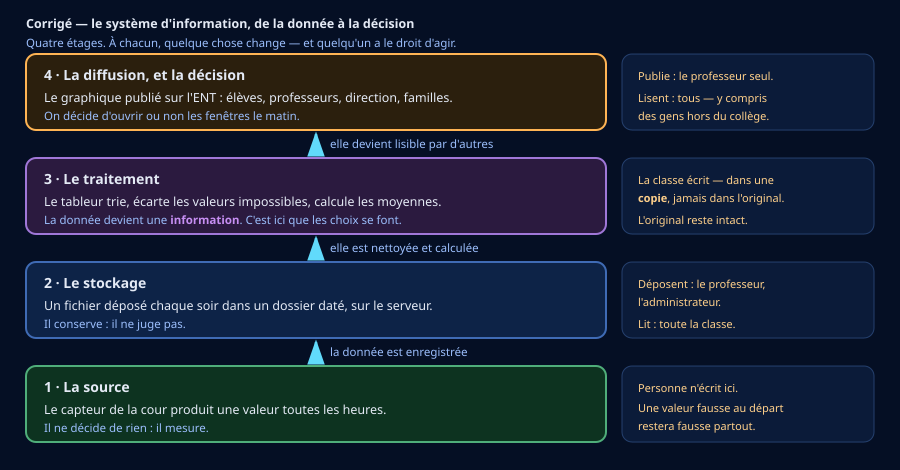

🎫 Billet d'entrée — je vérifie mes outils (5 min, sans note)
Trois questions sur ce que tu sais déjà. Aucune note : c'est un aiguillage.
🎒 Je révise en 3 minutes
Une fonction technique dit ce que l'objet doit faire : elle commence par un verbe à l'infinitif — « mesurer la poussière », « maintenir au frais ». Elle ne dit pas comment : ça, c'est le principe, et plusieurs principes peuvent remplir la même fonction.
Au tableur, =MOYENNE(A2:A8) calcule la moyenne d'une plage de cellules.
Une donnée personnelle n'est pas seulement un nom. C'est toute information qui permet de reconnaître quelqu'un, même sans le nommer : « la personne qui passe la balayeuse le mardi » désigne une personne précise dans un collège.
🔬 Activité 1 — Une fonction, trois principes (~40 min)
Le collège doit choisir son capteur. Trois appareils existent, et ils remplissent la même fonction : mesurer la concentration de poussières dans l'air. Ils n'emploient pas le même principe — c'est-à-dire pas le même phénomène physique.

a) Fonction, principe, solution
b) Lire les limites
c) Ton choix, et sa défense
🪜 Version étayée — des phrases à compléter
- « Je retiens le principe ____ (P__). »
- « Première raison : ____. » · « Deuxième raison : ____. »
- « En le choisissant, j'accepte de perdre ____, parce que pour un collège ____. »
💡 Aide de niveau 1
Deux contraintes éliminent vite : le budget d'un collège, et le fait que personne sur place n'est technicien de laboratoire.
💡💡 Aide de niveau 2
Demande-toi à quoi servira la mesure. Si c'est pour décider d'ouvrir les fenêtres le matin, il faut une réponse dans l'heure. Un appareil très précis qui répond le lendemain ne rend pas ce service — même s'il est meilleur « dans l'absolu ».
📖 Correction complète
Le choix attendu : P1, la diffusion optique — et il est imparfait, c'est tout l'intérêt.
Deux raisons : elle répond en 5 secondes, donc elle permet une décision le matin même ; et elle coûte 25 €, ce qu'un collège peut engager sans dossier.
Ce qu'on accepte de perdre : la précision (± 10 % contre ± 2 %), et la maîtrise de l'encrassement — la mesure dérivera lentement, sans rien signaler. Il faudra donc comparer régulièrement à une autre source, ou nettoyer.
P2, la gravimétrie, est plus juste et pourtant inadaptée : 24 h pour un seul résultat, on saurait toujours la veille. Un appareil meilleur qui ne rend pas le service attendu n'est pas un meilleur choix.
P3, l'atténuation bêta, est éliminée par une contrainte qui n'a rien de technique : une source radioactive scellée impose un contrôle réglementaire qu'un collège ne peut pas assurer. 6 500 € et 12 W achèvent de la disqualifier.
🧠 À retenir : une même fonction se remplit par plusieurs principes. Le meilleur principe n'est pas le plus précis : c'est celui qui rend le service attendu, dans les contraintes réelles.
⚠️ Piège classique : choisir l'appareil le plus performant du tableau sans regarder ce qu'il exige — argent, compétence, réglementation.
🧹 Activité 2 — Collecter, trier, analyser (~45 min)
Le capteur tourne depuis une semaine. Le fichier
releves_air_chengdu_simules.csv contient 90 relevés : jour, heure,
PM2.5 en µg/m³, température, humidité.
Il contient aussi quatre anomalies. Aucune n'est signalée. Tu dois les trouver avant de calculer quoi que ce soit : une moyenne calculée sur des données sales est fausse, et elle a l'air juste.
a) Reconnaître une anomalie
b) Au tableur
Ouvre le fichier dans un tableur. Les modes opératoires ci-dessous valent pour les deux logiciels que tu peux rencontrer — au collège comme chez toi.
📊 Mode opératoire — LibreOffice Calc (gratuit)
- Ouvrir : Fichier → Ouvrir → choisir le
.csv. Dans la fenêtre d'import, cocher Point-virgule comme séparateur. - Trier : sélectionner les données → Données → Trier… → colonne
pm25_ug_m3, ordre croissant. Les valeurs impossibles apparaissent en tête. - Moyenne :
=MOYENNE(C2:C91) - Moyenne sans les valeurs fausses :
=MOYENNE.SI.ENS(C2:C91;C2:C91;">0";C2:C91;"<200") - Maximum :
=MAX(C2:C91)· Nombre de valeurs :=NB(C2:C91)
📊 Mode opératoire — Excel
- Ouvrir : Données → À partir d'un fichier texte/CSV → séparateur point-virgule.
- Trier : Données → Trier → colonne
pm25_ug_m3, du plus petit au plus grand. - Moyenne :
=MOYENNE(C2:C91) - Moyenne sans les valeurs fausses :
=MOYENNE.SI.ENS(C2:C91;C2:C91;">0";C2:C91;"<200") - Maximum :
=MAX(C2:C91)· Nombre de valeurs :=NB(C2:C91)
c) Ton relevé
🪜 Version étayée — des phrases à compléter
- « Anomalie 1 : ____, à ____ h — c'est ____ parce que ____. »
- « Anomalie 2 / 3 / 4 : (même modèle) »
- « Moyenne avec les valeurs fausses : ____ µg/m³. »
- « Moyenne sans : ____ µg/m³. L'écart est de ____. »
💡 Aide de niveau 1
Trie la colonne des PM2.5 du plus petit au plus grand : deux anomalies sautent aux yeux immédiatement — l'une en haut, l'autre en bas.
💡💡 Aide de niveau 2
Les deux autres ne se voient pas au tri : l'une est une répétition (la même valeur plusieurs heures de suite), l'autre est une absence (compte les lignes d'une journée : il devrait y en avoir 13).
Un capteur qui répète exactement la même valeur pendant six heures ne mesure plus : il est bloqué. Une vraie mesure varie toujours un peu.
📖 Correction complète
Les quatre anomalies :
- Mercredi 11 h : −4,2 µg/m³. Impossible : une concentration est une quantité de matière, elle ne peut pas être négative. Sans doute une erreur du capteur au moment d'un redémarrage.
- Vendredi, de 9 h à 14 h : 23,7 six fois de suite. Un capteur bloqué. Une vraie mesure varie toujours un peu : six valeurs strictement identiques ne se produisent pas naturellement.
- Lundi 14 h : relevé manquant. La journée ne compte que 12 lignes au lieu de 13. On le signale, et on calcule sans lui — on n'invente jamais une mesure.
- Dimanche 16 h : 251,0 alors que les heures voisines sont vers 25. Une virgule décalée : 25,1 est devenu 251.
Les moyennes : 27,4 µg/m³ avec les valeurs fausses, 25,2 µg/m³ sans. L'écart paraît petit — 2,2 µg/m³ — et il vient de trois valeurs sur quatre-vingt-dix. C'est exactement pour cela qu'il est dangereux : une moyenne calculée sur des données sales n'a pas l'air fausse. Rien ne signale l'erreur.
Ce qu'on fait des valeurs fausses : on les écarte du calcul, mais on les garde dans le fichier avec une note. Les effacer, c'est perdre la trace d'un dysfonctionnement du capteur — et c'est justement ce qu'il faut signaler au technicien.
🧠 À retenir : on nettoie avant de calculer. Une moyenne calculée sur des données sales est fausse — et elle a l'air juste.
⚠️ Piège classique : effacer les valeurs fausses. On les écarte du calcul, on ne les supprime pas : ce sont des traces de panne.
🗂️ Activité 3 — Ranger, et retrouver (~35 min)
Trois semaines de relevés, et le dossier du professeur ressemble à ceci
(arborescence_actuelle_simulee.csv) : 14 entrées, dont
truc.csv, finalV2 (copie).csv, Nouveau dossier/ et
capteur mardi PIC ATTENTION.csv.
Personne ne retrouve rien — y compris celui qui a rangé. Dans trois mois, ce sera pire.
a) Ce qui rend un nom utilisable
b) Ton arborescence
🪜 Version étayée — la structure est donnée
- « station-air-chengdu/ »
- « 1-____/ » puis les fichiers qu'il contient, renommés
- « 2-____/ » · « 3-____/ » · « 4-____/ »
- « Règle 1 : ____. » · « Règle 2 : ____. » · « Règle 3 : ____. »
💡 Aide de niveau 1
Regroupe par nature, pas par date : les relevés bruts d'un côté, ce que tu en as tiré de l'autre, les documents reçus ailleurs, les photos à part.
💡💡 Aide de niveau 2
Numérote tes dossiers (1-, 2-…) si tu veux qu'ils s'affichent dans
l'ordre du travail et non par ordre alphabétique.
Et vérifie ton rangement par un test : « dans six mois, sauras-tu retrouver le graphique de la semaine 11 sans ouvrir aucun fichier ? » Si la réponse est non, les noms ne sont pas assez parlants.
📖 Correction complète — avec l'arborescence attendue

Quatre règles de nommage :
- Dire ce que c'est, pas ce qu'on en pense.
releves-air-2026-s10, pasPIC ATTENTION— un jugement vieillit, un contenu non. - Dater en
2026-04-02: dans cet ordre, le tri alphabétique donne l'ordre chronologique. C'est la seule raison, et elle suffit. - Ni espaces, ni accents, ni majuscules : un nom doit survivre au passage d'un ordinateur, d'un site ou d'une clé USB à l'autre.
- Une seule version conservée — la bonne.
finalV2 (copie)était identique ;sans titre.odtne contenait que deux lignes. Deux fichiers identiques ne font pas une sécurité : ils font un doute.
Le test qui tranche : dans six mois, retrouver le graphique de la semaine 11
sans ouvrir un seul fichier. Avec graphique(1).png, impossible. Avec
2-analyses/graphique-pm25-s11.png, immédiat.
🧠 À retenir : un nom de fichier s'écrit pour celui qui cherchera — souvent soi-même, dans six mois, et sans souvenir.
⚠️ Piège classique : ranger par date de création plutôt que par nature. On cherche presque toujours « le graphique », rarement « ce que j'ai fait le 17 mars ».
🔗 Activité 4 — Le chemin de la donnée (~35 min)
Le capteur mesure. Le tableur calcule. Le graphique s'affiche sur l'ENT. Entre les deux, il y a des fichiers, un serveur, des personnes et des droits : c'est cela, un système d'information. Ce n'est pas une machine — c'est une chaîne.
Ton schéma du système d'information
🪜 Version étayée — des phrases à compléter
- « 1. La source : ____. Écrit ici : ____. »
- « 2. Le stockage : ____. Écrivent ici : ____. Lisent : ____. »
- « 3. Le traitement : ____. Écrit ici : ____, dans ____. »
- « 4. La diffusion et la décision : ____. Publie : ____. »
💡 Aide de niveau 1
Suis une seule valeur — celle du mardi 7 h — et demande-toi, à chaque endroit où elle passe : qu'est-ce qui lui arrive ici ?
💡💡 Aide de niveau 2
Les quatre étages se reconnaissent à ce qu'ils font : l'un produit, l'autre conserve, le troisième transforme, le dernier montre.
Pour les droits, pose-toi la question à l'envers : si cette valeur changeait, qui aurait pu le faire ? La réponse te donne la liste.
📖 Correction complète — avec le schéma attendu

1 · La source. Le capteur produit une valeur par heure. Il ne décide de rien. Et personne n'y écrit : une valeur fausse au départ le restera partout, tant qu'on ne l'écarte pas.
2 · Le stockage. Un fichier déposé chaque soir dans un dossier daté. Il conserve, il ne juge pas. Déposent : le professeur et l'administrateur. Lit : toute la classe.
3 · Le traitement. Le tableur trie, écarte, calcule : la donnée devient une information. C'est ici que se font les choix — et donc ici qu'on peut se tromper. La classe écrit dans une copie, jamais dans l'original.
4 · La diffusion, et la décision. Le graphique sur l'ENT : élèves, professeurs, direction, familles. On décide d'ouvrir ou non les fenêtres. Publie : le professeur seul — parce qu'à partir d'ici, ce qui est publié échappe à celui qui l'a écrit.
🧠 À retenir : un système d'information est une chaîne de personnes et d'outils, pas une machine. Chaque étage transforme la donnée ; chaque étage a ses droits.
⚠️ Piège classique : croire qu'une donnée « circule » sans changer. Elle est nettoyée, calculée, mise en forme — et à la fin, ce qu'on lit n'est plus ce que le capteur a mesuré.
🔒 Activité 5 — Protéger, puis répondre (~45 min)
Ce qui s'est passé. Le fichier de relevés a été déposé sur l'ENT du collège pour que chacun puisse travailler dessus. Trois jours plus tard, le professeur l'ouvre : quatre valeurs ont changé, et la moyenne n'est plus la même. Personne n'a rien dit.
a) Sécuriser (5e_C1.5)
🪜 Version étayée — des phrases à compléter
- « Mesure 1 : ____. Cela empêche ____. »
- « Mesure 2 : ____. Cela empêche ____. »
- « Mesure 3 : ____. Cela empêche ____. »
b) Répondre (5e_C1.6)
Le fichier est restauré. En le nettoyant, la classe remarque enfin ce que le tri avait montré dès la séance 2 : les mardis et jeudis à 7 h, la valeur monte à 67 µg/m³ contre 26 les autres jours.
La classe cherche, et trouve : la balayeuse mécanique passe dans la cour ces jours-là, à cette heure-là. Le fait est exact. Et dans ce collège, une seule personne conduit cette balayeuse.
![Trois panneaux. La mesure : 67 µg/m³ les mardis et jeudis à 7 h contre 26 les autres jours, exacte et ne désignant personne. L'explication : la balayeuse mécanique passe ces jours-là, et une seule personne la conduit. La publication, avec trois options : A nomme l'agent, exacte et inacceptable ; B tait la cause, acceptable et inutile ; C nomme le nettoyage mécanique et propose de le décaler, exacte, utile, et désignant une organisation. Une bande conclut qu'on n'a pas le choix des faits mais de ce qu'on en publie.](Images/la_donnee_qui_designe.svg)
🪜 Version étayée — des phrases à compléter
- « Les relevés montrent que ____ les mardis et jeudis à 7 h. »
- « Ce pic correspond à ____. »
- « Nous proposons de ____. »
- « J'ai volontairement écarté ____, pour protéger ____. »
💡 Aide de niveau 1
Écris d'abord ce que tu veux obtenir — que le nettoyage change d'heure. Puis demande-toi le minimum d'informations nécessaire pour l'obtenir.
💡💡 Aide de niveau 2
Une publication utile désigne ce qu'il faut changer, pas qui a mal fait. Ici, rien n'a été mal fait : quelqu'un nettoie la cour, c'est son travail, et c'est l'horaire qui pose problème.
Test avant de publier : si cette personne lisait ta publication, pourrait-elle continuer à travailler sereinement le lendemain ? Si la réponse est non, réécris.
📖 Correction complète
Les trois mesures de sécurité (d'autres sont recevables si elles disent ce qu'elles empêchent) :
- Droits minimaux : le fichier de référence est déposé en lecture seule ; seul le professeur peut y écrire. Empêche qu'une modification passe inaperçue, et rend inutile de soupçonner qui que ce soit.
- Copie de travail : chaque groupe travaille sur sa propre copie. Empêche que le travail des uns écrase celui des autres.
- Sauvegarde datée de l'original avant partage. Empêche la perte définitive : on peut comparer, voir ce qui a changé, et revenir en arrière.
Sur la notice du fabricant : être trouvable sur internet ne veut pas dire libre de droits. On vérifie la licence, et on cite la source dans tous les cas — même quand la republication est autorisée.
Sur le mot de passe partagé : il ne protège plus rien, et surtout il rend impossible de savoir qui a fait quoi. Un compte par personne n'est pas une formalité : c'est ce qui permet de ne soupçonner personne.
La publication. Voici la version C, développée :
« Les relevés du capteur de la cour montrent une concentration de particules 2,5 fois plus élevée les mardis et jeudis à 7 h (67 µg/m³ contre 26 les autres jours). Ce pic correspond au nettoyage mécanique de la cour, programmé ces jours-là à cette heure. Nous proposons de décaler ce nettoyage avant l'arrivée des élèves, ou de l'effectuer en fin de journée. »
Ce qui a été écarté : le nom de l'agent, sa photo, et toute formule qui permettrait de le reconnaître — y compris « la personne qui passe la balayeuse », qui dans un collège ne désigne qu'une personne. Pour protéger quelqu'un qui n'a rien fait de mal : il fait son travail, à l'heure qu'on lui a donnée.
Et ce qui n'a pas été écarté : le chiffre, la cause et la proposition. Sans eux, la publication serait honnête et inutile — et l'air de la cour resterait le même.
🧠 À retenir : on n'a pas le choix des faits, on a le choix de ce qu'on en publie. La question n'est pas « est-ce vrai ? » mais « qui cela désigne, et pour quel effet ? »
⚠️ Piège classique : croire qu'une information est anonyme parce qu'elle ne contient pas de nom. Dans un petit groupe, une fonction, un horaire ou une habitude suffisent à désigner quelqu'un.
Critère de réussite : tes trois mesures disent ce qu'elles empêchent, et ta publication contient le chiffre, la cause et une proposition — sans permettre de reconnaître quiconque.
🪞 Mon bilan personnel (~10 min)
💭 Rappel de ton hypothèse de départ :
🪜 Version étayée — des phrases à compléter
- « J'avais trouvé ____ étapes sur six. »
- « Celles auxquelles je n'avais pas pensé : ____. »
- « Celle qui m'a le plus surpris·e : ____, parce que ____. »
🪜 Version étayée — des phrases à compléter
- « J'ai appris qu'une moyenne calculée sur des données sales ____. »
- « J'ai appris qu'un nom de fichier s'écrit pour ____. »
- « J'ai appris qu'une information exacte peut ____. »
🪜 Version étayée — des phrases à compléter
- « Je dois encore revoir ____, parce que ____. »
- « Ce que je n'arrive pas encore à faire seul·e : ____. »
🧭 Comment j'ai travaillé
Je me positionne
🧠 Prêt·e à t'entraîner ?
Le QCM de la séquence compte 30 questions, dont 5 illustrées, et chaque réponse fausse y est expliquée. Elles se répartissent sur les six codes :
- 5e_C1.1 collecter, trier, analyser — 6 questions
- 5e_C1.2 comparer des principes — 5 questions
- 5e_C1.3 systèmes d'information — 5 questions
- 5e_C1.4 ranger et retrouver — 5 questions
- 5e_C1.5 sécuriser — 5 questions
- 5e_C1.6 responsabilité — 4 questions
🎁 Bonus (facultatif — hors parcours obligatoire)
1. Cherche une donnée publique sur ta commune — qualité de l'air, pluviométrie, fréquentation d'un équipement. Combien de temps te faut-il pour la trouver ? Est-elle téléchargeable, ou seulement affichée ?
2. Range ton propre dossier de travail (celui du collège, ou celui de ta clé USB) selon les quatre règles de nommage. Compte les fichiers que tu supprimes.
3. Trouve, dans l'actualité ou autour de toi, un cas où une donnée exacte a désigné quelqu'un. Qu'aurait-il fallu publier à la place ?
📖 Corrigé du Bonus — un exemple entièrement traité
1. Une donnée publique sur la commune. Exemple pris : la qualité de l'air en Martinique, publiée par l'association agréée de surveillance (Gwad'Air / Madininair selon les territoires). Sept minutes pour trouver la page, et une découverte : la valeur du jour s'affiche, mais l'historique n'est téléchargeable qu'en demandant.
Ce qu'on apprend en cherchant : une donnée « publique » n'est pas toujours réutilisable. Voir un chiffre et pouvoir le traiter sont deux choses différentes — et c'est exactement la distinction entre diffusion et partage vue à la séance 4.
2. Le rangement de mon dossier. 47 fichiers au départ. Après application des quatre
règles : 31 fichiers, dans 4 dossiers. 16 supprimés — dont neuf doublons
(DM (1).odt, DM (2).odt…), quatre brouillons vides, et trois captures
d'écran dont je ne savais plus à quoi elles servaient.
Ce qui surprend : le tiers du dossier ne servait à rien, et il n'était pas identifiable avant qu'on regarde chaque fichier un par un. C'est le prix des mauvais noms.
3. Une donnée exacte qui désigne quelqu'un. Exemple pris : un collège publie le taux de réussite au DNB par classe. Les chiffres sont exacts. Mais avec une seule classe de 3e B, « la 3e B a 62 % » désigne aussi le professeur principal de la 3e B, et trente élèves reconnaissables par leurs camarades.
Ce qu'il aurait fallu publier : le taux de l'établissement, et son évolution sur trois ans. Cela répond à la vraie question — l'établissement progresse-t-il ? — sans désigner ni une classe, ni un professeur, ni des élèves.